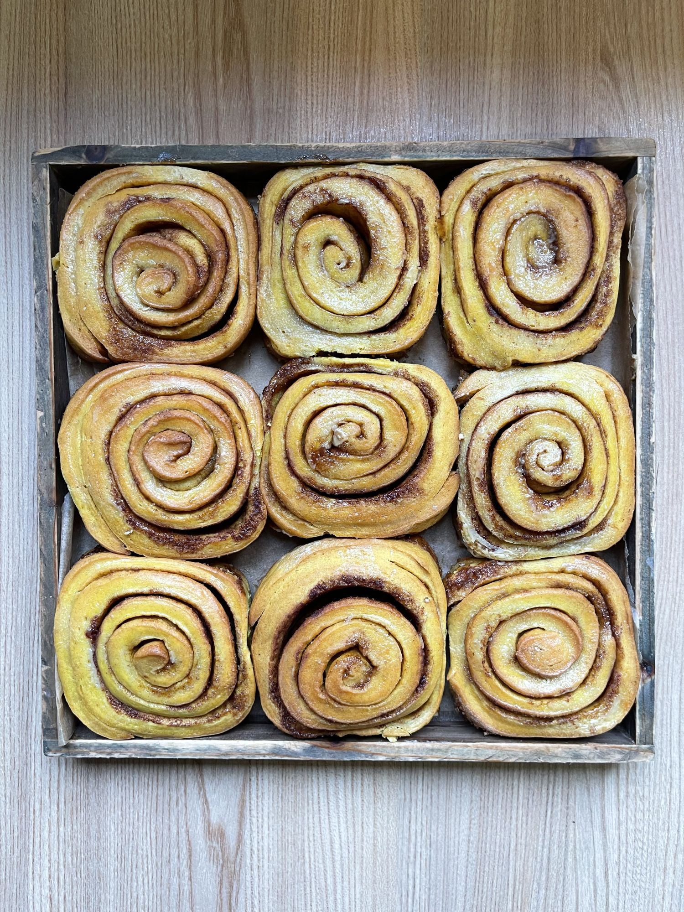
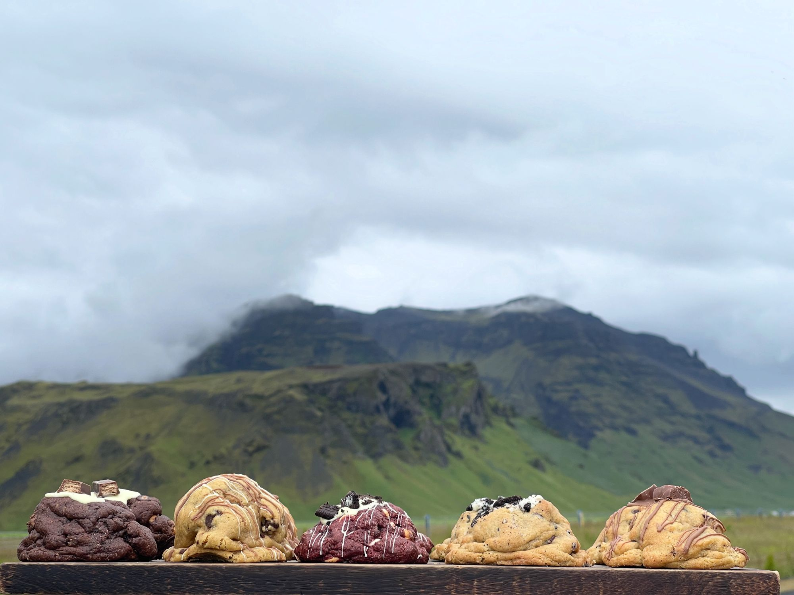
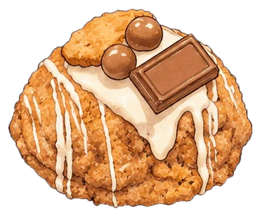
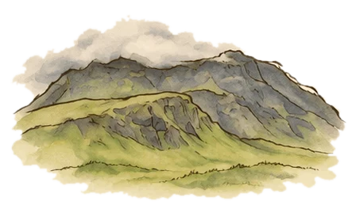
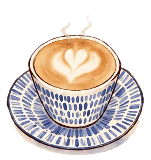
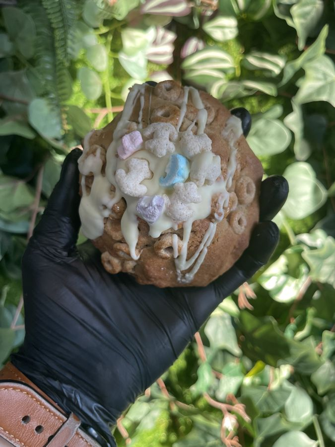
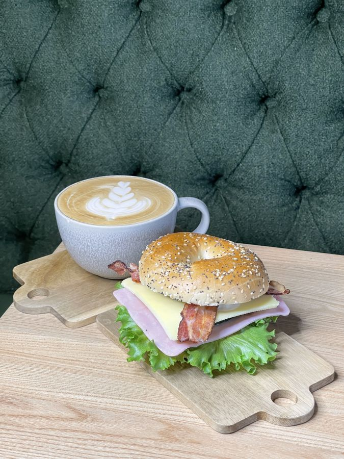
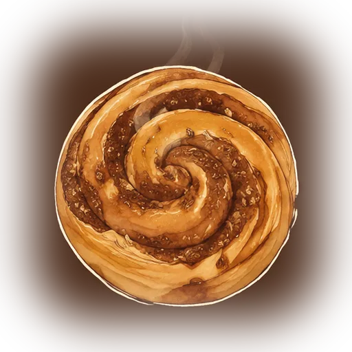
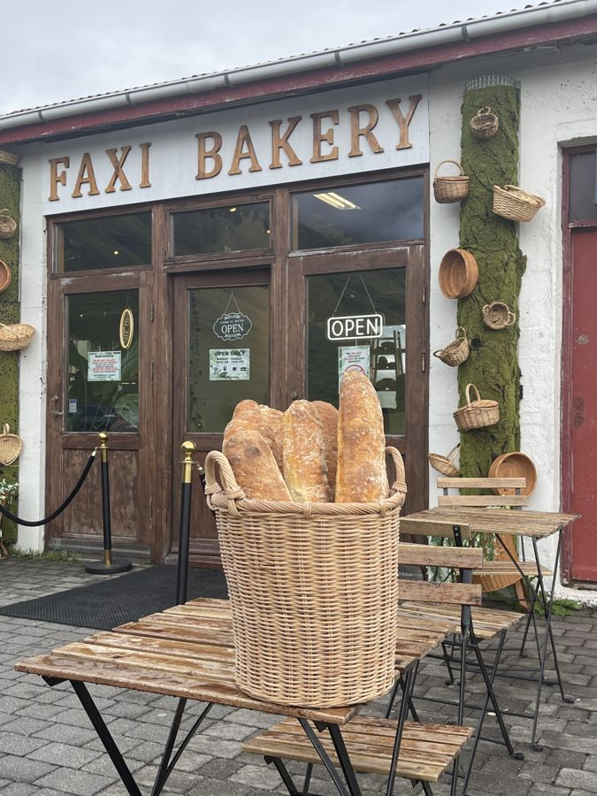
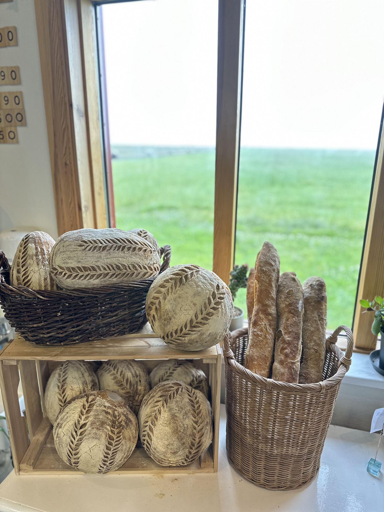

COFFEE and BUNS under Eyjafjallajökull
a bakery 
with
unregular stuff,
Cinnamon rolls · Stuffed cookies · Coffee and matcha
baked by hand every hour,
right under the 
volcano,
and always human made. 
See what's in the oven
Faxi by the road
OUR BAKES


WHAT GOES INTO
A FAXI ROLL
Butter
Cinnamon
Cardamom

Flour
Brown sugar
An hour, every hour

COFFEE and MATCHA
Espresso, iced lattes, matcha and fresh berry drinks in big jars, made at the counter while the rolls cool.
BUNS every HOUR
A fresh tray of cinnamon rolls comes out of the oven every hour, so something warm is always waiting.
FOR the ROAD
Pull off Route 1, take a coffee and a roll for the drive, or sit by the plant wall and stay a while.
